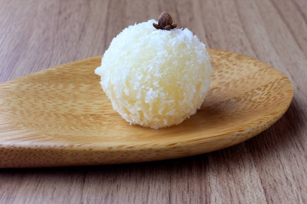

Beijinho

Description
Beijinho is a classic Brazilian confection made from sweetened condensed
milk, grated coconut, and butter, often garnished with a clove. This
bite-sized treat is creamy, rich, and irresistibly sweet, offering a
delightful burst of coconut flavor in every bite. Perfect for celebrations
or as a sweet indulgence, beijinho is a beloved favorite that captures the
essence of Brazilian sweetness.
Ingredients
- 1(14 ounce) can sweetned condensed milk
- 1 tablespoon butter, plus more for pan
- 1/4 cup sweetened flaked coconut
- sweetened flaked coconut for decorating
- whole cloves for decorating
Steps
-
Bring milk and butter to a simmer in a saucepan over medium-low heat.
Continue to cook, stirring often, until the milk has reduced to half and
thickened, about 20 minutes. Remove from heat, stir in the 1/4 cup
coconut, and allow to cool a bit before pouring into a buttered bowl.
Chill in the refrigerator until cold, about 2 hours.
-
With buttered or oiled hands, form milk mixture into tablespoon-sized
balls, and roll in coconut flakes. Stick a clove into each beijinho as
decoration.